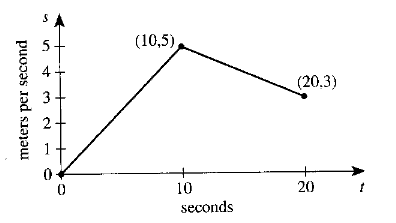
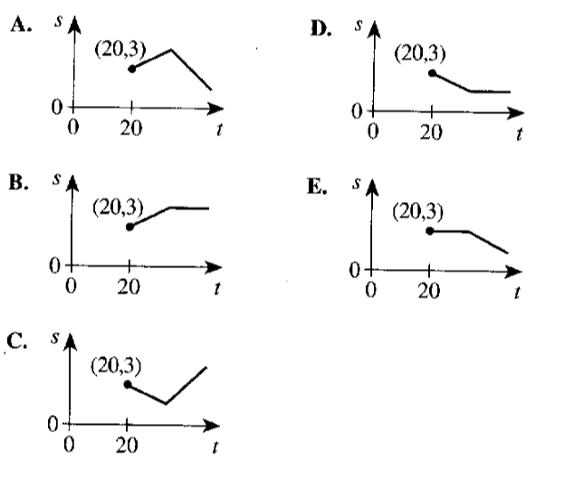
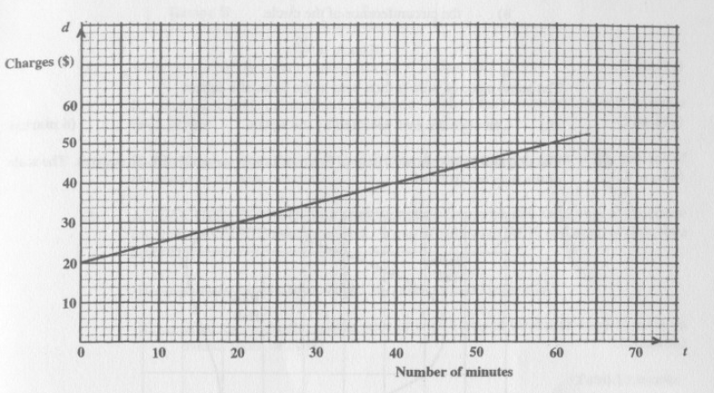
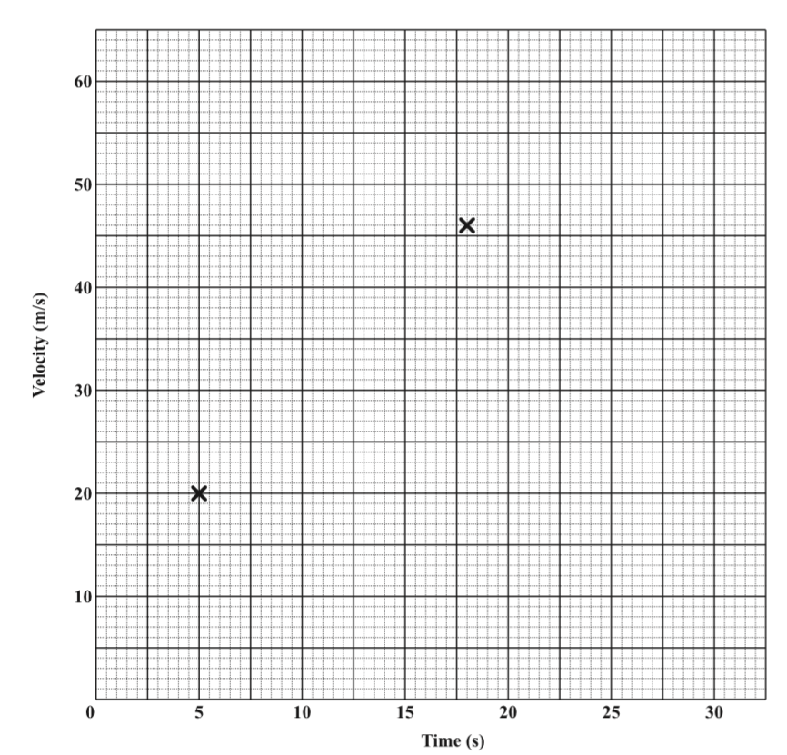
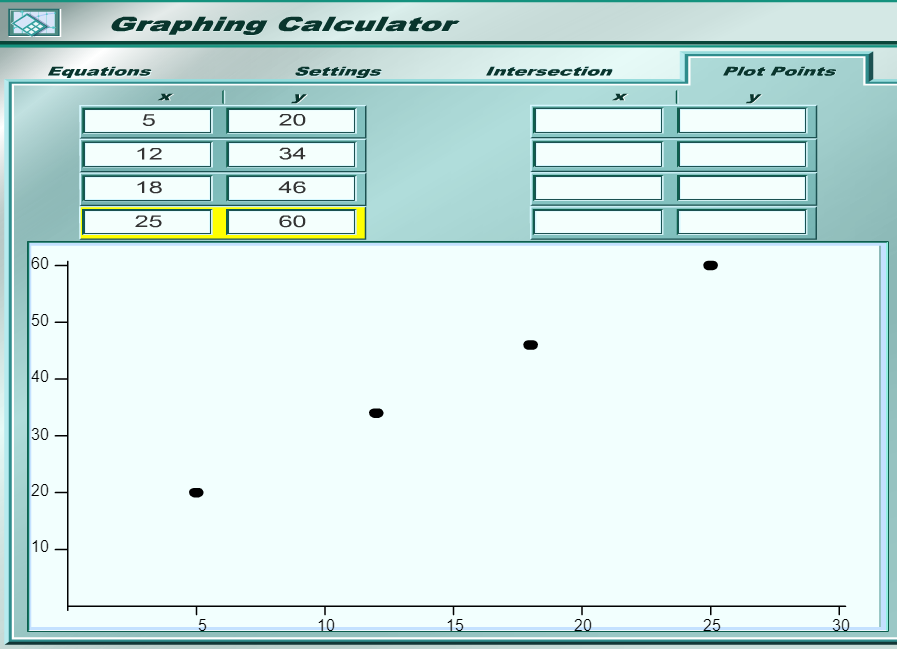
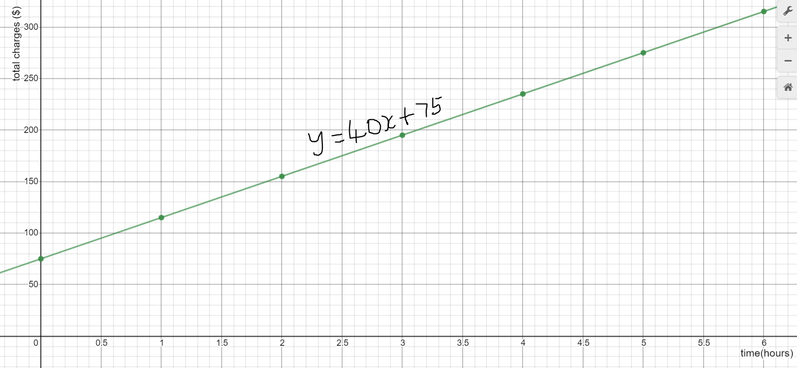

For ACT Students
The ACT is a timed exam...60 questions for 60 minutes
This implies that you have to solve each question in one minute.
Some questions will typically take less than a minute a solve.
Some questions will typically take more than a minute to solve.
The goal is to maximize your time. You use the time saved on those questions you
solved in less than a minute, to solve the questions that will take more than a minute.
So, you should try to solve each question correctly and timely.
So, it is not just solving a question correctly, but solving it correctly on time.
Please ensure you attempt all ACT questions.
There is no negative penalty for a wrong answer.
For JAMB, CMAT, and NZQA Students
Calculators are not allowed. So, the questions are solved in a way that does not require a calculator.
For NSC Students For the Questions:
Any space included in a number indicates a comma used to separate digits...separating multiples of three digits from
behind.
Any comma included in a number indicates a decimal point. For the Solutions:
Decimals are used appropriately rather than commas
Commas are used to separate digits appropriately.
Solve all questions.
Use at least two methods whenever applicable.
Show all work.
(1.) In January 2004, the price of a gallon of milk was $3.30 per gallon.
In January 2015, the price was $3.76 per gallon.
Calculate the average rate of change in the price of a gallon of milk from 2004 to 2015.
Interpret your solution.
(Source: United States Department of Labor).
The average rate of change is also known as the slope.
From the information, we see that the input is the year and the output is the price
of a gallon of milk.
Student: How did you know?
Teacher: What variable depends on what variable? Does the price of milk depend on
the year, or does the year depend on the price of milk?
Student: The price of milk depends on the year.
Teacher: That is correct. This means that the price of milk is the ...
Student: Dependent variable also known as the output or the $y-value$
Teacher: That is correct. The year is the ...
Student: Independent variable also known as the input or the $x-value$
Teacher: Correct. Another reason is the based on the wording of the question:
it asked for the average rate of change in the "price" based on the "year"
This means the changes in the output based on the changes in the input.
That describes the slope.
$
Point\:1 = (2004, 3.30) \\[3ex]
x_1 = 2004 \\[3ex]
y_1 = 3.30 \\[3ex]
Point\:2 = (2015, 3.76) \\[3ex]
x_2 = 2015 \\[3ex]
y_2 = 3.76 \\[3ex]
m = \dfrac{y_2 - y_1}{x_2 - x_1} \\[5ex]
= \dfrac{3.76 - 3.30}{2015 - 2004} \\[5ex]
= \dfrac{0.46}{11} \\[5ex]
= 0.041818182 \\[3ex]
$
The average rate of change in the price of a gallon of milk from 2004 to 2015 is
about $0.0418 per year.
This means that there was an increase of about $0.04 (4 cents) in
the price of a gallon of milk per year from 2004 to 2015
Check the Interpretation
Use the exact (not approximate) values of the slope.
(2.) Onesimus bought a phone for $$84$ and signed up for a single-line
phone plan with $2000$ monthly anytime minutes.
The cost of the plan was $$116.99$ per month.
(a.) Write an equation that is used to determine the total cost, $C(t)$ of this
phone plan for $t$ months.
(b.) Calculate the cost for $21$ months assuming that the number of minutes he uses
does not exceed $2000$ per month.
Based on the question:
Total cost of the phone plan = $C(t)$
Number of months = $t$
Fixed cost = $84$
Variable cost = $116.99t$ ($$116.99$ per month)
Total cost = Fixed cost + Variable cost
$
C(t) = 84 + 116.99t \\[3ex]
For\:\: t = 21 \\[3ex]
C(21) = 84 + 116.99(21) \\[3ex]
C(21) = 84 + 2456.79 \\[3ex]
C(21) = 2540.79 \\[3ex]
$
(a.) The equation is: $C(t) = 84 + 116.99t$
(b.) The cost for $21$ months is: $$2540.79$
(3.) ACT Students studying motion observed a cart rolling at a constant rate along
a straight line.
The table below gives the distance $d$ feet, the cart was from a reference point at $1-second$
intervals from $t=0$ seconds to $t=5$ seconds.
$t$
$0$
$1$
$2$
$3$
$4$
$5$
$d$
$15$
$18$
$21$
$24$
$27$
$30$
Which of the following equations represented this relationship between $d$ and $t$?
$
F.\:\: d = t + 15 \\[3ex]
G.\:\: d = 3t + 12 \\[3ex]
H.\:\: d = 3t + 15 \\[3ex]
J.\:\: d = 15t + 3 \\[3ex]
K.\:\: d = 33t \\[3ex]
$
We can do this in two ways.
You may decide to use any method that is faster for you.
You can do either method in about a minute First Method: Slope-Intercept Form
Calculate the slope.
Use the first and last points.
$
m = \dfrac{d_2 - d_1}{t_2 - t_1} \\[5ex]
m = \dfrac{30 - 15}{5 - 0} \\[5ex]
m = \dfrac{15}{5} \\[5ex]
m = 3 \\[3ex]
b = d-intercept(value\:\: of\:\: d \:\:when\:\: t = 0) \\[3ex]
b = 15 \\[3ex]
d = 3t + 15 \\[3ex]
$
Second Method: Testing and Eliminating
test each of the answer options and eliminate anyone that does not satisfy any of
the points.
(4.) ACT A water tank that initially contained $200$ gallons of water is leaking water at a constant
rate of $4$ gallons per minute.
For the amount of time the tank has water, which of the following function models gives the number of gallons,
$G$, in the tank $t$ minutes after the leak started?
(5.) ACT Shasta is participating in a bike ride for charity.
The graph of speed $(s)$ versus time $(t)$ for the first $20$ seconds of her bike ride is shown in the
coordinate plane below.
The graph is composed of $2$ line segments for which the endpoints are at
$(0, 0), (10, 5),$ and $(20, 3)$.
Shasta traveled $25$ meters in the first $10$ seconds.

Beginning at $t = 20$ seconds, Shasta slows down as she approaches a familiar group of riders ahead
of her and then travels at a constant speed with the group after joining them.
What is Shasta's speed, in meters per second, at $t = 3$ seconds?
The first $3$ seconds lies in the first line segment whose endpoints are $(0, 0)$ and $(10, 5)$
First: We need to find the slope
Second: We have to write the equation of the line joining those points in Slope-Intercept form
$
Point\:\:1 = (0, 0) \\[3ex]
x_1 = 0 \\[3ex]
y_1 = 0 \\[3ex]
y-intercept, b = 0 \\[3ex]
Point\:2 = (10, 5) \\[3ex]
x_2 = 10 \\[3ex]
y_2 = 5 \\[3ex]
Slope, m = \dfrac{y_2 - y_1}{x_2 - x_1} \\[5ex]
m = \dfrac{5 - 0}{10 - 0} \\[5ex]
m = \dfrac{5}{10} \\[5ex]
m = \dfrac{1}{2} \\[5ex]
y = mx + b \\[3ex]
y = \dfrac{1}{2}x + 0 \\[5ex]
y = \dfrac{1}{2}x \\[3ex]
This\:\:implies\:\:that \\[3ex]
s = \dfrac{1}{2}t \\[5ex]
when\:\:t = 3 \\[3ex]
s = \dfrac{1}{2} * 3 \\[5ex]
s = \dfrac{3}{2} \\[5ex]
s = 1.5\:ms^{-1}
$
(6.) ACT Based on Question $5$
Shasta's acceleration, $a$, over the interval from $t = 10$ seconds to
$t = 20$ seconds, is equal to the slope of the graph over that interval, measured in
meters per second per second.
What is the value of $a$?
$
Point\:\:1 = (10, 5) \\[3ex]
x_1 = 10 \\[3ex]
y_1 = 5 \\[3ex]
Point\:2 = (20, 3) \\[3ex]
x_2 = 20 \\[3ex]
y_2 = 3 \\[3ex]
Slope, m = \dfrac{y_2 - y_1}{x_2 - x_1} \\[5ex]
m = \dfrac{3 - 5}{20 - 10} \\[5ex]
m = \dfrac{-2}{10} \\[5ex]
m = \dfrac{-1}{5} \\[5ex]
a = m \\[3ex]
\therefore a = -\dfrac{1}{5}\:ms^{-2}
$
(7.) ACT Based on Question $5$
Calen started his bike ride earlier than Shasta.
During the first $15$ seconds of Shasta's ride, Calen was traveling at a constant speed equal to
$\dfrac{1}{2}$ of Shasta's maximum speed during that same time period.
How far, in meters, did Calen travel during the first $15$ seconds of Shasta's ride?
Which of the following graphs best represents the portion of Shasta's ride beginning at $t = 20$ seconds?

Beginning at $t = 20$ seconds, Shasta slows down as she approaches a familiar group of riders ahead
of her...
This eliminates Options $A$, $B$, and $E$
...and then travels at a constant speed with the group after joining them.
This eliminates Option $C$
Option $D$ is the graph that best represents the portion of Shasta's ride beginning at $t = 20$ seconds
(9.) ACT The length, $L$ in meters, of a spring is given by the equation
$L = \dfrac{2}{3}F + 0.03$
where $F$ is the applied force in newtons.
What force, in newtons, must be applied for the spring's length to be $0.18$ meters?
$
L = \dfrac{2}{3}F + 0.03 \\[5ex]
\dfrac{2}{3}F + 0.03 = L \\[5ex]
\dfrac{2}{3}F = L - 0.03 \\[5ex]
LCD = 3 \\[3ex]
3 * \dfrac{2}{3}F = 3(L - 0.03) \\[5ex]
2F = 3(L - 0.03) \\[3ex]
F = \dfrac{3(L - 0.03)}{2} \\[5ex]
L = 0.18\:\:meters \\[3ex]
F = \dfrac{3(0.18 - 0.03)}{2} \\[5ex]
F = \dfrac{3(0.15)}{2} \\[5ex]
F = \dfrac{0.45}{2} \\[5ex]
F = 0.225\:\:Newtons
$
(10.) ACT The relationship between temperatures in degrees Fahrenheit, $F$, and temperatures
in degrees Celsius, $C$, is expressed by the formula $F = \dfrac{9}{5}C + 32$
Calvin reads a temperature of $38^\circ$ on a Celsius thermometer.
To the nearest degree, what is the equivalent temperature on a Fahrenheit thermometer?
$
F = \dfrac{9}{5}C + 32 \\[5ex]
C = 38^\circ \\[3ex]
F = \dfrac{9}{5} * 38 + 32 \\[5ex]
F = \dfrac{342}{5} + 32 \\[5ex]
F = \dfrac{342}{5} + \dfrac{160}{5} \\[5ex]
F = \dfrac{342 + 160}{5} \\[5ex]
F = \dfrac{502}{5} \\[5ex]
F = 100.4^\circ \approx 100^\circ \\[3ex]
38^\circ C \approx 100^\circ F
$
(11.) ACT When Jeff starts a math assignment, he spends $5$ minutes getting out his book and a
sheet of paper, sharpening his pencil, looking up the assignment in his assignment notebook, and turning
to the correct page in his book.
The equation $t = 10p + 5$ models the time, $t$ minutes, Jeff budgets for a math assignment with $p$
problems.
Which of the following statements is necessarily true according to Jeff's model?
F. He budgets $15$ minutes per problem
G. He budgets $10$ minutes per problem
H. He budgets $5$ minutes per problem
J. He budgets $10$ minutes per problem for the hard problems and $5$ minutes per problem for the easy
problems.
K. He budgets a $5-minute$ break after each problem.
Let us analyze this question.
Look at the function: $t = 10p + 5$
Compare to $y = mx + b$
The $slope, m = 10$ minutes per problem
The $y-intercept, b = 5$ minutes
(1.) Jeff takes $5$ minutes to get prepared prior to solving his math assignment problems.
That $5$ minutes is the $y-intercept$
(2.) But, he actually spends $10$ minutes on EACH problem.
That $10$ minutes is the slope.
So, he budgets $10$ minutes per problem....Correct answer
However, he budgets $t = 10(1) + 5 = 10 + 5 = 15$ minutes to get started and solve a problem
He budgets $t = 10(2) + 5 = 20 + 5 = 25$ minutes to get started and solve two problems....and so on and so forth
(12.) ACT Mr. Cleary's algebra class is discussing slopes of lines.
The class is to graph the total cost, $C$, of buying $h$ hamburgers that cost $99¢$ each.
Mr. Cleary asks the class to describe the slope between any $2$ points $(h, C)$ on the graph.
Devon gives a correct response that the slope between any $2$ points on this graph is always:
F. zero
G. the same positive value.
H. the same negative value.
J. a positive value, but the value varies.
K. a negative value, but the value varies.
A graph of the total cost, $C$, of buying $h$ hamburgers that cost $99¢$ each indicates that:
the total cost, $C$ is the dependent variable on the $y-axis$
the hamburgers, $h$ is the independent variable on the $x-axis$
hamburgers that cost $99¢$ each (means that the cost per hamburger), $99¢$ is the slope
This implies that the slope between any $2$ points on this graph is always that same positive value, $99¢$
(13.) ACT At a certain airline company, the cost to transfer mileage points from one
person's account to another person's account is $0.75 for every 100 mileage points transferred
plus a onetime $20 processing fee.
What is the cost to transfer 7,000 mileage points from one account to another at that airline company?
We shall use the Equation of a Straight Line in Slope-Intercept Form
$y = mx + b$
$m$ is the slope.
The slope is the cost to transfer for every mileage point (every $1$ mileage point).
Let us find the slope.
Proportional Reasoning Method
cost($\$$)
mileage
$0.75$
$100$
$m$
$1$
$
\dfrac{m}{1} = \dfrac{0.75}{100} \\[5ex]
m = \$0.0075\:\:per\:\:mileage\:\:point \\[3ex]
$
The $y-intercept$ is the one-time processing fee.
$b$ is the $y-intercept$
$x$ is the mileage point
$y$ is the cost to transfer mileage points from one account to another
$
b = \$20 \\[3ex]
m = 0.0075 \\[3ex]
x = 7000 \\[3ex]
y = ? \\[3ex]
y = mx + b \\[3ex]
y = 0.0075(7000) + 20 \\[3ex]
y = 52.5 + 20 \\[3ex]
y = \$72.50
$
(14.) ACT The graph below gives the speed, in knots (nautical miles per hour), of a
cruise ship during a $5-hour$ period.
Which of the following values is closest to the rate of change, in knots per hour, of the speed of
the ship between hours $2$ and $4$?
(15.) CSEC The amount a plumber charges for services depends on the time taken to complete the
repairs plus a fixed charge.
The graph below shows the charges in dollars $(d)$ for repairs in terms of the number of minutes $(t)$
taken to complete the repairs.

(a) What was the charge for a plumbing job which took $20$ minutes?
(b) How many minutes were spent completing repairs that cost:
(i) $\$38.00$
(ii) $\$20.00$?
(c) What is the amount of the fixed charge?
(d) Calculate the gradient of the line.
(e) Write down the equation of the line in terms of $d$ and $t$
(f) Determine the length of time taken to complete a job for which the charge was $\$78.00$
$
Based\:\:\:on\:\:the\:\:Graph \\[3ex]
(a) \\[3ex]
t = 20\:\:minutes \\[3ex]
d = \$30.00 \\[3ex]
$
The charge for a plumbing job which took $20$ minutes is $\$30.00$
$
(b) \\[3ex]
(i) \\[3ex]
d = \$38.00 \\[3ex]
t = 35\:\:minutes \\[3ex]
(ii) \\[3ex]
d = \$20.00 \\[3ex]
t = 0\:\:minutes \\[3ex]
$
$35$ minutes were spent completing repairs that cost $\$38.00$
$0$ minutes were spent completing repairs that cost $\$20.00$
(c) The fixed charge is $\$20.00$
$
(d) \\[3ex]
Point\:1:(20, 30) \\[3ex]
x_1 = 20 \\[3ex]
y_1 = 30 \\[3ex]
Point\:2: (60, 50) \\[3ex]
x_2 = 60 \\[3ex]
y_2 = 50 \\[3ex]
Gradient, m = \dfrac{y_2 - y_1}{x_2 - x_1} \\[5ex]
m = \dfrac{50 - 30}{60 - 20} \\[5ex]
m = \dfrac{20}{40} \\[5ex]
m = \dfrac{1}{2}\$/minutes \\[5ex]
$
The gradient of the line is $\dfrac{1}{2}$ dollars per minute
$
(e) \\[3ex]
y = mx + b...Slope-Intercept\:\:Form \\[3ex]
d = mt + b \\[3ex]
b = 20 \\[3ex]
m = \dfrac{1}{2} \\[5ex]
d = \dfrac{1}{2}t + 20 \\[5ex]
(f) \\[3ex]
d = \dfrac{1}{2}t + 20 \\[5ex]
d = \$78.00 \\[3ex]
78 = \dfrac{1}{2}t + 20 \\[5ex]
LCD = 2 \\[3ex]
2(78) = 2\left(\dfrac{1}{2}t\right) + 2(20) \\[5ex]
156 = t + 40 \\[3ex]
t + 40 = 156 \\[3ex]
t = 156 - 40 \\[3ex]
t = 116 \\[3ex]
$
The time taken to complete a job for which the charge was $\$78.00$ is $116$ minutes
(16.) CSEC The values recorded in the table below represent the velocity of an object over a
period of time.
Velocity, $v(m/s)$
$20$
$34$
$46$
$60$
Time, $t(s)$
$5$
$12$
$18$
$25$
(i) On the grid below, two points are plotted.
Plot the remaining two points on the grid and draw a line of best fit through the points.

(ii) Given that the linear motion of the object can be expressed in the form $v = at + u$,
where $a$ and $u$ are constants, use your graph to determine the values of $a$ and $u$.
(i)

You may use your graph to determine the values of $a$ and $u$...determining it graphically
However, I shall determine it algebraically.
The values should be the same.
$
(t, v) = (x, y) \\[3ex]
Unit\:\:of\:\:v = m/s \\[3ex]
Unit\:\:of\:\:t = s \\[3ex]
Slope, m = \dfrac{\Delta v}{\Delta t} \\[5ex]
Unit\:\:of\:\:slope = \dfrac{m}{s} \div s = \dfrac{m}{s} * \dfrac{1}{s} = \dfrac{m}{s^2} \\[5ex]
\underline{First} \\[3ex]
Let:\:us\:\:find\:\:the\:\:slope \\[3ex]
Use\:\:the\:\:first\:\:and\:\:last\:\:points \\[3ex]
Point\:1\:(5, 20)\rightarrow x_1 = 5, y_1 = 20 \\[3ex]
Point\:2\:(25, 60)\rightarrow x_2 = 25, y_2 = 60 \\[3ex]
m = \dfrac{y_2 - y_1}{x_2 - x_1} \\[5ex]
m = \dfrac{60 - 20}{25 - 5} \\[5ex]
m = \dfrac{40}{20} \\[5ex]
m = 2 \\[3ex]
Slope = 2m/s^2 \\[3ex]
\underline{Second} \\[3ex]
Find\:\:the\:\:y-intercept, b \\[3ex]
y-intercept\:\:is\:\:the\:\:point\:\:where\:\:x = 0 \\[3ex]
We\:\:need\:\:to\:\:find\:\: (0, b) \\[3ex]
Let\:\:use\:\:that\:\:point\:\:and\:\:the\:\:last\:\:point \\[3ex]
Point\:1\:(0, b)\rightarrow x_1 = 0, y_1 = b \\[3ex]
Point\:2\:(25, 60)\rightarrow x_2 = 25, y_2 = 60 \\[3ex]
m = \dfrac{y_2 - y_1}{x_2 - x_1} \\[5ex]
m = \dfrac{60 - b}{25 - 0} \\[5ex]
m = \dfrac{60 - b}{25} \\[5ex]
Also:\:\:m = 2...applies\:\:to\:\:all\:\:points\:\:on\:\:the\:\:line \\[3ex]
\rightarrow \dfrac{60 - b}{25} = 2 \\[5ex]
Multiply\:\:both\:\:sides\:\:by\:\:25 \\[3ex]
25 * \dfrac{60 - b}{25} = 25 * 2 \\[5ex]
60 - b = 50 \\[3ex]
60 - 50 = b \\[3ex]
10 = b \\[3ex]
b = 10 \\[3ex]
\underline{Equation\:\:of\:\:the\:\:line} \\[3ex]
y = mx + b \\[3ex]
y = 2x + 10 \\[3ex]
Write\:\:the\:\:actual\:\:equation\:\:well \\[3ex]
v = at + u \\[3ex]
Compare: \\[3ex]
(x, y) = (t, v) \\[3ex]
a = m = 2, u = b = 10 \\[3ex]
\therefore v = 2t + 10 \\[3ex]
\underline{Check\:\:for\:\:all\:\:points} \\[3ex]
v = 2t + 10 \\[3ex]
t = 5; v = 2(5) + 10 = 10 + 10 = 20 \\[3ex]
t = 12; v = 2(12) + 10 = 24 + 10 = 34 \\[3ex]
t = 18; v = 2(18) + 10 = 36 + 10 = 46 \\[3ex]
t = 25; v = 2(25) + 10 = 50 + 10 = 60 \\[3ex]
It\:\:worked \checkmark
$
(17.) ACT The depth of a pond is 180cm and is being reduced by 1cm per week.
The depth of a second pond if 160cm and is being reduced by $\dfrac{1}{2}$cm per week.
If the depths of both ponds continue to be reduced at these constant rates, in about how many weeks
will the ponds have the same depth?
$
Let\:\:the\:\:depth\:\:of\:\:first\:\:pond = d_1 \\[3ex]
Let\:\:the\:\:depth\:\:of\:\:second\:\:pond = d_2 \\[3ex]
Let\:\:the\:\:week = w \\[3ex]
d = f(w) \\[3ex]
\underline{First\:\:Pond} \\[3ex]
Reduced\:\:by\:\:1\:\:cm\:\:per\:\:week\:\:means\:\:negative\:\:slope \\[3ex]
slope = -1\:cm/week \\[3ex]
d-intercept = 180\:cm \\[3ex]
d_1 = -1w + 180 \\[3ex]
\underline{Second\:\:Pond} \\[3ex]
Reduced\:\:by\:\:\dfrac{1}{2}\:\:cm\:\:per\:\:week\:\:means\:\:negative\:\:slope \\[5ex]
slope = -\dfrac{1}{2}\:cm/week \\[5ex]
d-intercept = 160\:cm \\[3ex]
d_2 = -\dfrac{1}{2}w + 160 \\[5ex]
\underline{Both\:\:ponds\:\:have\:\:the\:\:same\:\:depth} \\[3ex]
\rightarrow d_1 = d_2 \\[3ex]
-1w + 180 = -\dfrac{1}{2}w + 160 \\[5ex]
180 - 160 = -\dfrac{1}{2}w + 1w \\[5ex]
20 = \dfrac{1}{2}w \\[5ex]
\dfrac{1}{2}w = 20 \\[5ex]
w = 2(20) \\[3ex]
w = 40 \\[3ex]
$
It would take $40$ weeks for both ponds to have the same depth
(18.) ACT Danica is trying to encourage he classmates to donate books for the fund-raiser and
book-drive for the local library.
Danica will donate $\$35.00$, plus $\$0.07$ for each book donated by classmates.
Which of the following equations gives Danica's donation, $d$ dollars, if $b$ books are donated by
her classmates?
$
A.\:\: d = 35 + 0.07b \\[3ex]
B.\:\: d = 35 + 0.7b \\[3ex]
C.\:\: d = 35 + 7b \\[3ex]
D.\:\: d = 35.07b \\[3ex]
E.\:\: d = 42b \\[3ex]
$
Danica will donate $\$35.00$ irrespective of whether her classmates donate books or not.
The $\$35$ is the $y-intercept$...in this case, it is the $d-intercept$...this is the money
donated by Danica when the number of books donated by her classmates is $0$
The $y-intercept$ is the value of $y$ when $x = 0$
Similarly, the $d-intercept$ is the value of $d$ when $b = 0$
For each book donated by her classmates, Danica will donate $\$0.07$
The $7$ cents or $\$0.07$ is the slope
Actually, the slope if $\$0.07$ per book
Recall: The slope is the change in the output, $y$ per unit change in the input, $x$
Similarly, the slope in this case is the change in the output, $d$ per unit change in the
input, $b$
So, $m = 0.07$
$
y = mx + b \\[3ex]
In\:\:this\:\:case \\[3ex]
d = mb + c...c\:\:is\:\:the\:\:d-intercept \\[3ex]
c = 35 \\[3ex]
m = 0.07 \\[3ex]
\therefore d = 0.07b + 35 \\[3ex]
d = 35 + 0.07b
$
(19.) ACT A weeklong summer camp is held in June for children in Grades 3 - 6
Parents and guardians who enrolled their children for camp by May 15 received a 20% discount off the regular
enrollment fee for each child enrolled.
For each grade, the table below gives the number of children enrolled by May 15 as well as the regular
enrollment fee per child.
The grade of any child is that child's grade in school as of May 15.
Grade
Enrollment by May 15
Regular enrollment fee
3
4
5
6
20
15
28
18
$350 $400 $450 $500
Which of the following equations gives a true relationship between the regular enrollment fee, f, and
the grade, g, of any child enrolled in the camp?
$
F.\;\; f = g + 50 \\[3ex]
G.\;\; f = 50g \\[3ex]
H.\;\; f = 50g + 200 \\[3ex]
J.\;\; f = 50g + 300 \\[3ex]
K.\;\; f = 300g + 50 \\[3ex]
$
We can solve this question in at least two ways.
Use any approach you prefer.
First Approach:Equation of a Straight-Line in Slope-Intercept Form
$
Point\;1 \\[3ex]
g_1 = 3 \\[3ex]
f_1 = 350 \\[3ex]
Point\;2 \\[3ex]
g_2 = 4 \\[3ex]
f_2 = 400 \\[3ex]
Slope,\;m = \dfrac{f_2 - f_1}{g_2 - g_1} \\[5ex]
= \dfrac{400 - 350}{4 - 3} \\[5ex]
= \dfrac{50}{1} \\[5ex]
= 50 \\[3ex]
To\;\;find\;\;y-intercept,\;\;Using\;\;Point\;2 \\[3ex]
f_2 = m * g_2 + b \\[3ex]
400 = 50(4) + b \\[3ex]
400 = 200 + b \\[3ex]
200 + b = 400 \\[3ex]
b = 400 - 200 \\[3ex]
b = 200 \\[3ex]
\implies \\[3ex]
f = m * g + b \\[3ex]
f = 50g + 200 \\[3ex]
$
Second Approach:Inspecting each option
This will likely take time unless you can do it mentally fast
This option is not recommended (because ACT is a timed test) unless you can do these kind of calculations fast and accurately
If you test Option H, you will notice that it works for all the Grade values and regular enrollment fee values
(20.) ACT The relationship between temperatures in degrees Fahrenheit, $F$, and temperatures
in degrees Celsius, $C$, is expressed by the formula $F = \dfrac{9}{5}C + 32$
Calvin reads a temperature of $38^\circ$ on a Fahrenheit thermometer.
To the nearest degree, what is the equivalent temperature on a Celsius thermometer?
$
F = \dfrac{9}{5}C + 32 \\[5ex]
To\:\:find\:\:C\:\:in\:\:terms\:\:of\:\:F \\[3ex]
Swap \\[3ex]
\dfrac{9}{5}C + 32 = F \\[5ex]
Multiply\:\:both\:\:sides\:\:by\:\:5 \\[3ex]
5\left(\dfrac{9}{5}C + 32\right) = 5 * F \\[5ex]
9C + 160 = 5F \\[3ex]
9C = 5F - 160 \\[3ex]
C = \dfrac{9F - 160}{9} \\[5ex]
F = 38^\circ \\[3ex]
C = \dfrac{9(38) - 160}{9} \\[5ex]
C = \dfrac{342 - 160}{9} \\[5ex]
C = \dfrac{182}{9} \\[5ex]
C = 20.2222222^\circ \approx 20^\circ \\[3ex]
38^\circ F \approx 20^\circ C
$
(21.) CSEC An electrician charges a fixed fee for a house visit plus an additional charge based on the length
of time spent on the job.
The total charges, $y$, are calculated using the equation $y = 40x + 75$, where $x$ represents the time in hours
spent on the job.
(a) Complete the table of values for the equation $y = 40x + 75$
$x$ (time in hours)
$0$
$1$
$2$
$3$
$4$
$5$
$6$
$y$ (total charges in $\$$)
$75$
$115$
$195$
$275$
$315$
(b) On graph paper, using a scale of $2\;cm$ to represent one hour on the $x-axis$ and $2\;cm$ to represent $50$
dollars on the $y-axis$, plot the $7$ pairs of values shown in your completed table.
Draw a straight line through all plotted points.
(c) Using your graph, determine,
(i) the total charges when the job took $4.5$ hours
(ii) the time, in hours, spent on a job if the tital charges were $\$300$
(iii) the fixed charges for a visit
Draw lines on your graph to show how the values for c(i) and c(ii) were obtained.
$
(a) \\[3ex]
Complete\;\;the\;\;missing\;\;y-values \\[3ex]
y = 40x + 75 \\[3ex]
x = 2 \\[3ex]
y = 40(2) + 75 \\[3ex]
y = 80 + 75 \\[3ex]
y = 155 \\[3ex]
Point = (x, y) = (2, 155) \\[3ex]
x = 4 \\[3ex]
y = 40(4) + 75 \\[3ex]
y = 160 + 75 \\[3ex]
y = 235 \\[3ex]
Point = (x, y) = (4, 235) \\[3ex]
$
(b)
The graph is shown:

Please note:
I used $1\;cm$ to represent $\$50$ on the $y-axis$ rather than $2\;cm$ to represent $\$50$
Why? It is because I used technology (https://www.desmos.com/calculator) to draw the graph
Please use what the question asked you to use: $2\;cm$ to represent $\$50$
(c)
The question requires us to use the graph to answer it.
We shall solve those questions graphically.
Then, we shall verify our answers by solving them algebraically. (As a check to make sure our answers are correct)
$
(i) \\[3ex]
\underline{Graphically} \\[3ex]
Based\;\;on\;\;the\;\;graph\;\;I\;\;used\;\;(Check\;\;yours) \\[3ex]
5\;lines \rightarrow 25...(normally) \\[3ex]
1\;line \rightarrow \dfrac{25}{5} \\[5ex]
1\;line \rightarrow 5 \\[3ex]
4.5\;hours \rightarrow about\;\;0.5\;line\;\;above\;\;250 \\[3ex]
0.5\;line\;\;above\;\;250 = 0.5(5) = 2.5 \\[3ex]
4.5\;hours \rightarrow (250 + 2.5) \\[3ex]
4.5\;hours \rightarrow 252.5 \\[3ex]
\underline{Algebraically} \\[3ex]
y = 40x + 75 \\[3ex]
x = 4.5 \\[3ex]
y = 40(4.5) + 75 \\[3ex]
y = 180 + 75 \\[3ex]
y = 255 \\[3ex]
$
The total charges when the job took $4.5$ hours is approximately $\$252.50$
$
(ii) \\[3ex]
\underline{Graphically} \\[3ex]
\underline{Graphically} \\[3ex]
Based\;\;on\;\;the\;\;graph\;\;I\;\;used\;\;(Check\;\;yours) \\[3ex]
5\;lines \rightarrow 0.5...(normally) \\[3ex]
1\;line \rightarrow \dfrac{0.5}{5} \\[5ex]
1\;line \rightarrow 0.1 \\[3ex]
\$300 \rightarrow 1\;line\;\;to\;\;the\;\;right\;\;of\;\;5.5 \\[3ex]
\$300 \rightarrow (5.5 + 0.1) \\[3ex]
\$300 \rightarrow 5.6 \\[3ex]
\underline{Algebraically} \\[3ex]
y = 40x + 75 \\[3ex]
40x + 75 = y \\[3ex]
40x = y - 75 \\[3ex]
x = \dfrac{y - 75}{40} \\[5ex]
y = 300 \\[3ex]
x = \dfrac{300 - 75}{40} \\[5ex]
x = \dfrac{225}{40} \\[5ex]
x = 5.625 \\[3ex]
$
Student: Mr. C, the two answers are not the same for both questions.
Are they not supposed to be the same? Teacher: Yes, they are supposed to be the same.
The reason for using the Algebraic Method is to ensure that the answer we got using the
Graphical Method is correct.
In this case, the best thing is to draw it manually on the graph paper and use the scales required by the question Student: So, which one should we use? Teacher: We shall use the answer from the Graphical Method because the question requires us to use
the Graphical Method.
However, we shall include the word, "approximately"
If the total charges were $\$300$, the time spent on the job is approximately $5.6$ hours.
(c)
The fixed charges for a visit is the $y-intercept$
$
y = 40x + 75 \\[3ex]
Compare:\;\; y = mx + b \\[3ex]
b = y-intercept = 75 \\[3ex]
$
The fixed charges for a visit is $\$75.00$
Draw the lines on the graph yourself. Do you know how to do it? If you do not, you may contact me.
(22.) ACT The table below shows Shannon's height, in inches, on her birthday from the day she
was born (birth) to age $5$
What was the average rate of change in Shannon's height, in inches per year, from birth to age $5?$
(23.) The relationship between temperatures in degrees Fahrenheit, $F$, and temperatures
in degrees Celsius, $C$, is expressed by the formula $F = \dfrac{9}{5}C + 32$
Calvin wants to know if there is any temperature on the Celsius thermometer that would correspond to
that same temperature on the Fahrenheit thermometer.
What would you tell Calvin?
$
F = \dfrac{9}{5}C + 32 \\[5ex]
Set\:\:F = C \\[3ex]
C = \dfrac{9}{5}C + 32 \\[5ex]
Swap \\[3ex]
\dfrac{9}{5}C + 32 = C \\[5ex]
\dfrac{9}{5}C - C = -32 \\[5ex]
\dfrac{9C}{5} - \dfrac{5C}{5} = -32 \\[5ex]
\dfrac{9C - 5C}{5} = -32 \\[5ex]
\dfrac{4C}{5} = -32 \\[5ex]
4C = 5(-32) \\[3ex]
4C = -160 \\[3ex]
C = -\dfrac{160}{4} \\[5ex]
C = -40^\circ \\[3ex]
$
At $-40^\circ$, the reading on the Celsius thermometer is equal to the reading on the Fahrenheit thermometer.
(24.) NZQA The height of a person, $H$ cm, can be estimated from the length of their forearm, $F$ cm, using the
formula $H = 3F + 100$
Use the formula to find the length of a person's forearm, $F$, if their height, $H$, is $160$ cm.
$
H = 3F + 100 \\[3ex]
H = 160,\;\; F = ? \\[3ex]
160 = 3F + 100 \\[3ex]
3F + 100 = 160 \\[3ex]
3F = 160 - 100 \\[3ex]
3F = 60 \\[3ex]
F = \dfrac{60}{3} \\[5ex]
F = 20\;cm \\[3ex]
$
The length of a person's forearm whose height is $160\;cm$ is $20\;cm$
(25.)
(26.) John is jogging at a constant speed of 3.3 miles per hour.
(a.) Find the distance, d that John jugs as a function of the time spent jogging per hour, t
(b.) Find the inverse function by expressing the time spent jogging per hour, t in terms of the distance jogged, d
$
(a.) \\[3ex]
d(t) = 3.3t \\[3ex]
(b.) \\[3ex]
d = 3.3t \\[3ex]
3.3t = d \\[3ex]
t = \dfrac{d}{3.3} \\[5ex]
t(d) = \dfrac{d}{3.3}
$
(27.) ACT The DigiPhone Company advertises the following calling plans:
DigiPhone Calling Plans
600 minutes* for $89.99** per month
1,000 minutes* for $119.99** per month
1,400 minutes * for $149.99** per month
*The charge for each additional minute is $0.20**
**Taxes are NOT included.
In the standard (x, y) coordinate plane, the points (600, 89.99), (1,000, 119.99), and (1,400, 149.99) are
collinear.
DigiPhone wants to offer a new plan that includes 400 minutes of calling time for a charge in line with those of its
other plans.
If $z represents the before-tax charge for this new plan, what should be the value of z so
that (400, z) is on the same line as the points representing the other plans?
The points are collinear means that the points lie on the same straight line
For the other point: (400, z) to lie on the same line:
implies that we need to determine the equation of a straight line
$
Point\;\;1: \;\; (600, 89.99) \\[3ex]
x_1 = 600 \\[3ex]
y_1 = 89.99 \\[3ex]
Point\;\;2: \;\; (1000, 119.99) \\[3ex]
x_2 = 1000 \\[3ex]
y_2 = 119.99 \\[3ex]
\underline{Find\;\;the\;\;slope} \\[3ex]
Slope\;\;Formula \\[3ex]
m = \dfrac{y_2 - y_1}{x_2 - x_1} \\[5ex]
= \dfrac{119.99 - 89.99}{1000 - 600} \\[5ex]
= \dfrac{30}{400} \\[5ex]
= 0.075 \\[3ex]
\underline{Find\;\;the\;\;y-intercept} \\[3ex]
Slope-Intercept\;\;Form \\[3ex]
Use\;\;Point\;1 \\[3ex]
Point\;\;1: \;\; (600, 89.99) \\[3ex]
x = 600 \\[3ex]
y = 89.99 \\[3ex]
y = mx + b \\[3ex]
89.99 = 0.075(600) + b \\[3ex]
89.99 = 45 + b \\[3ex]
45 + b = 89.99 \\[3ex]
b = 89.99 - 45 \\[3ex]
b = 44.99 \\[3ex]
\underline{Find\;\;the\;\;y-coordinate} \\[3ex]
Point\;\;4:\;\; (400, z) \\[3ex]
x = 400 \\[3ex]
y = z \\[3ex]
m = 0.075 \\[3ex]
b = 44.99 \\[3ex]
Slope-Intercept\;\;Form \\[3ex]
y = mx + b \\[3ex]
z = 0.075(400) + 44.99 \\[3ex]
z = 30 + 44.99 \\[3ex]
z = \$74.99
$
 For ACT Students
For ACT Students